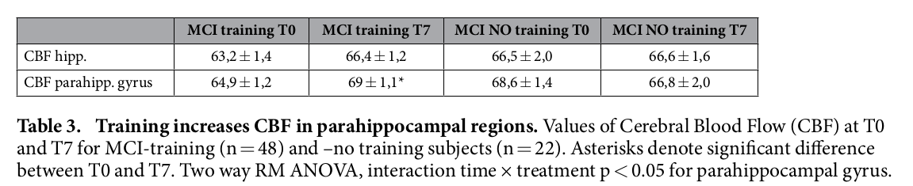

<?xml version="1.0" encoding="UTF-8"?>
<table title="table3" id="table3" class="tabcontent" xmlns="http://www.w3.org/1999/xhtml">
 <tr>
  <td>
   
   <p>../../cm-ucl/corpus-oa-pmr-v02/10.1038_srep39471/tables/table3/table.png</p>
  </td>
  <td>
   <table class="table">
    <caption/>
    <tr>
     <th class="cell">Table3. TrainingincreasesCBFinparahippocampalregions.ValuesofCerebralBloodFlow(CBF)atT0 andT7forMCI-training(n=48)and– notrainingsubjects(n=22).Asterisksdenotesignificantdifference betweenT0andT7.TwowayRMANOVA,interactiontime×treatmentp&lt;0.05forparahippocampalgyrus. </th>
    </tr>
   </table>
   <p>../../cm-ucl/corpus-oa-pmr-v02/10.1038_srep39471/tables/table3/table.svg.html</p>
  </td>
 </tr>
</table>
